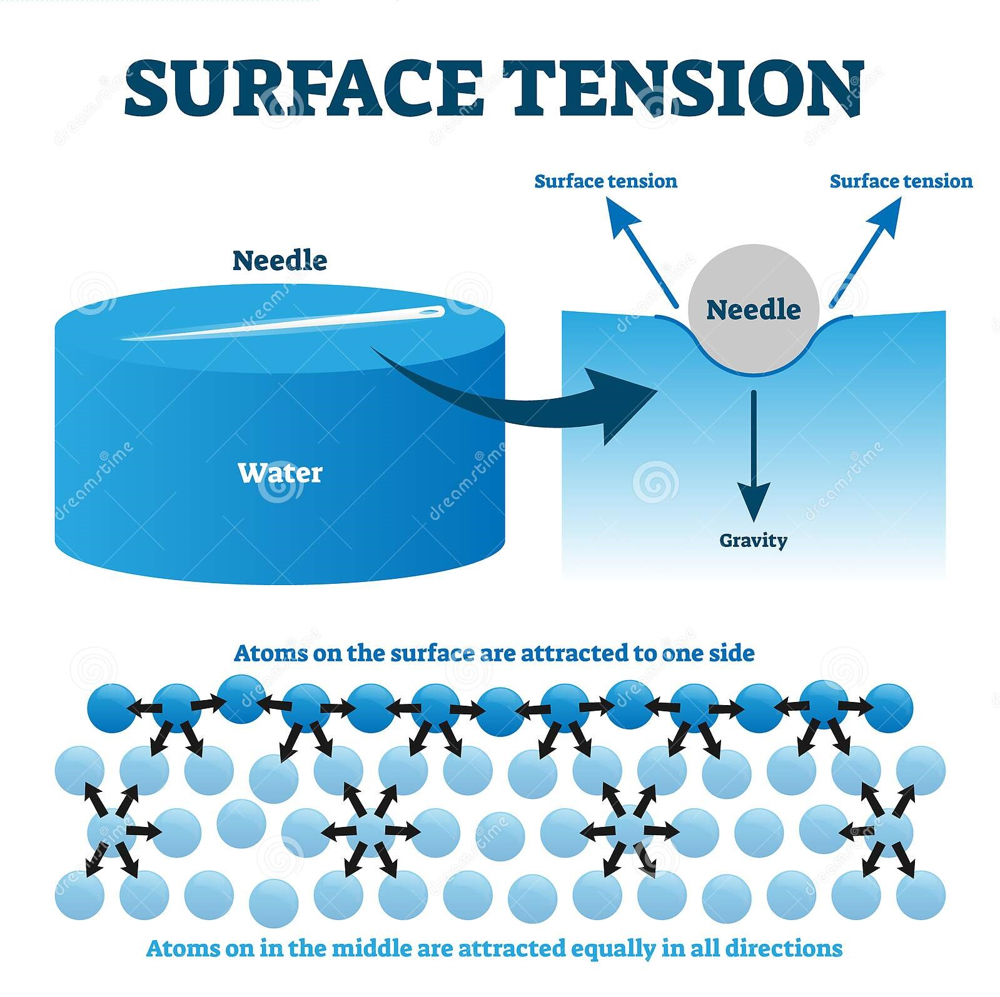
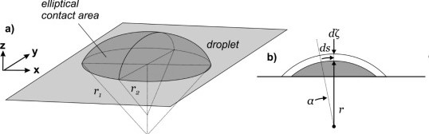
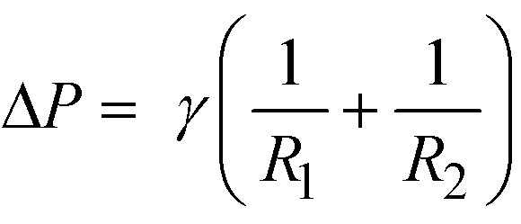
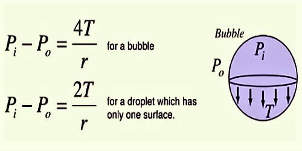

Surface Tension
-
Surface tension is the property of the surface of a fluid which resists external force to some extent and it is
due to cohesive force between fluid molecules at the topmost surface.
-

-
This property also helps us to understand things like why small insects can float on water and
not on kerosene and why bubbles are spherical in shape.
-
Droplet And Laplace's Equation:
-
Surface tension is responsible for the shape of liquid droplets. Droplets of virtually all liquids would be spherical
in absence of forces as spherical shape minimizes the wall tension of the surface layer according Laplace's law.
-


-
Laplace's equation gives the formula for pressure difference inside
a bubble(two surfaces) and a droplet(one surface) respectively.
-

-
The stretch of applications of surface tension includes capillary rise. These phenomena find applications like
cleaning action of soap(surfactants) and eye drops.